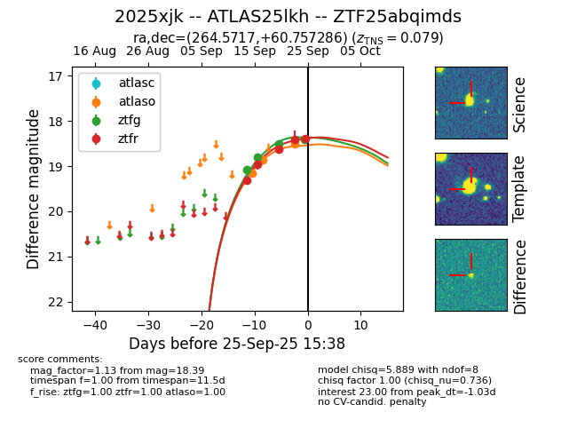
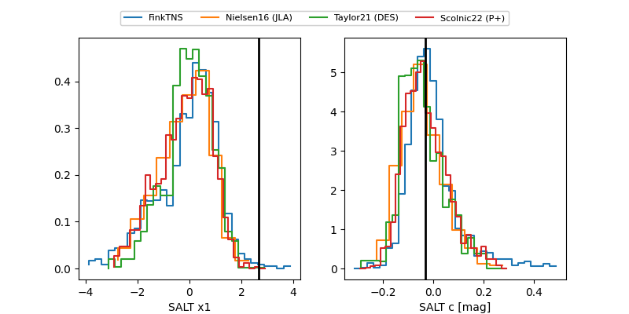

FINK: ZTF25abqimds
Lasair: ZTF25abqimds
ALeRCE: ZTF25abqimds
TNS: 2025xjk
YSE: 2025xjk
ZTF25abqimds (ztf,fink)
2025xjk (tns,yse)
ATLAS25lkh (atlas)
equatorial (ra, dec) = (264.5717,+60.75729)
galactic (l, b) = (89.6522,+32.29636)


last atlaso=18.50, ztfg=18.41, ztfr=18.39
3 atlaso, 4 ztfg, 5 ztfr detections